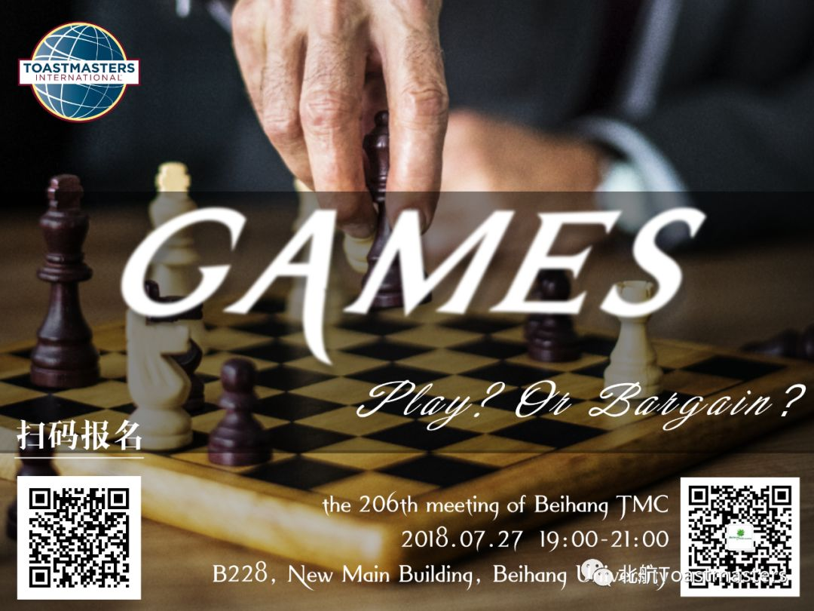
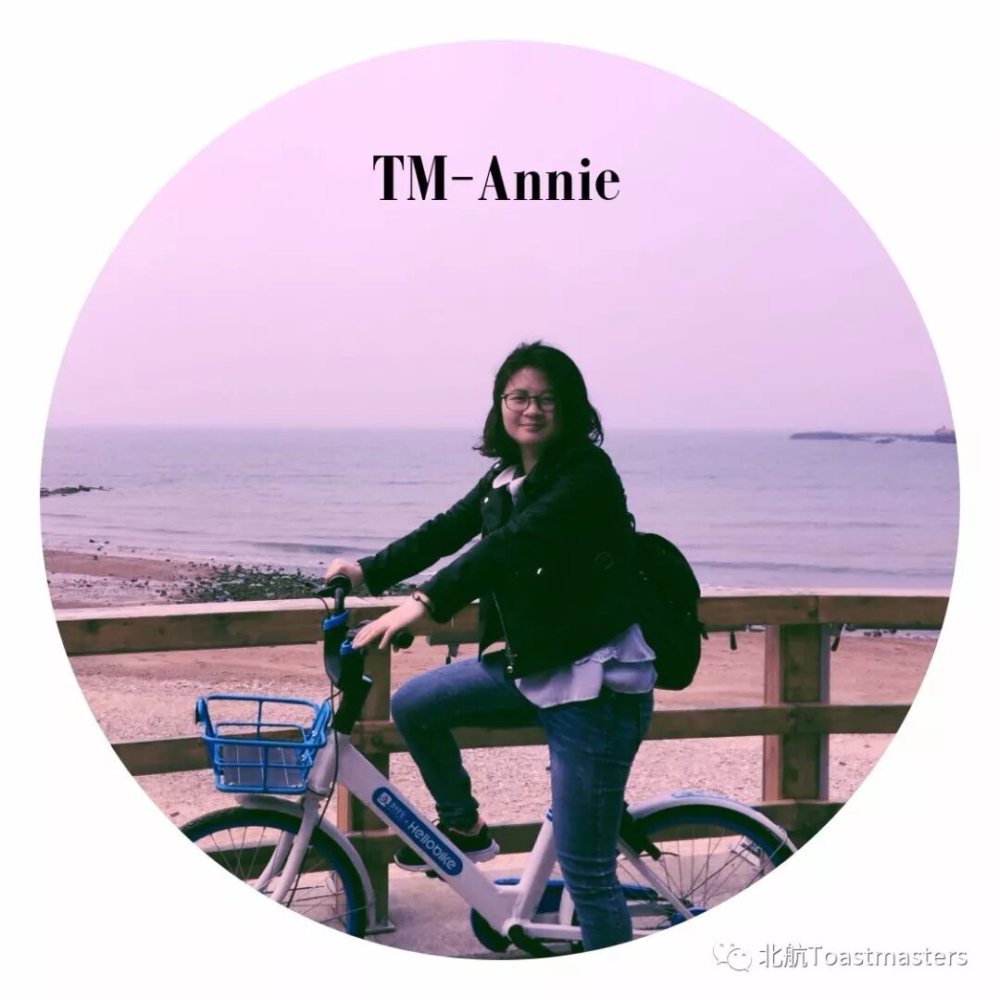
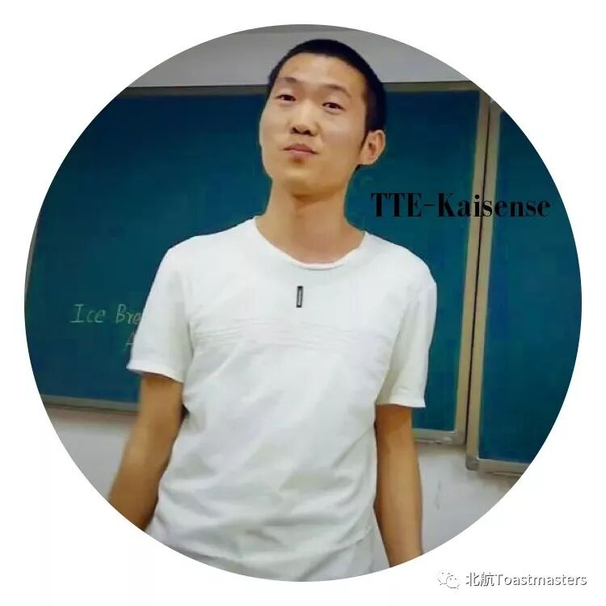
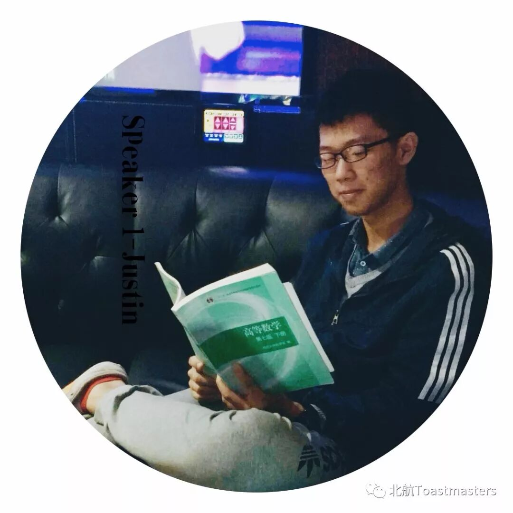
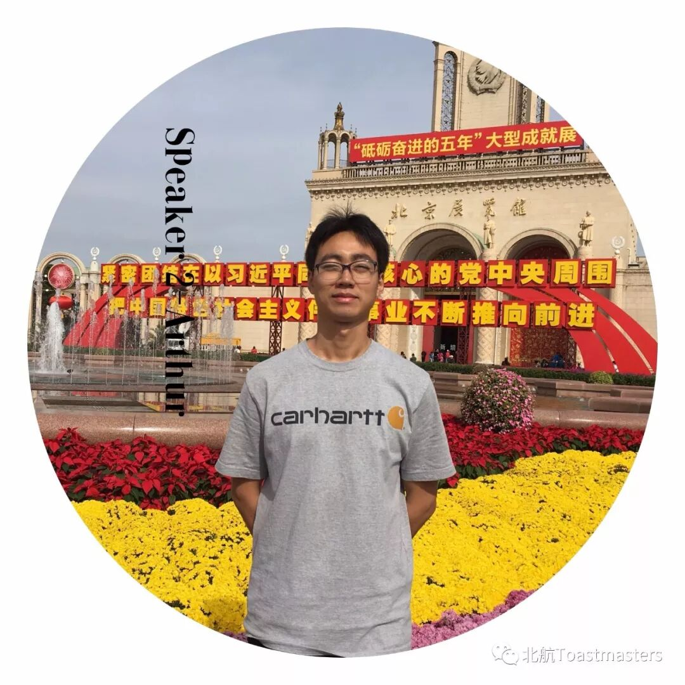
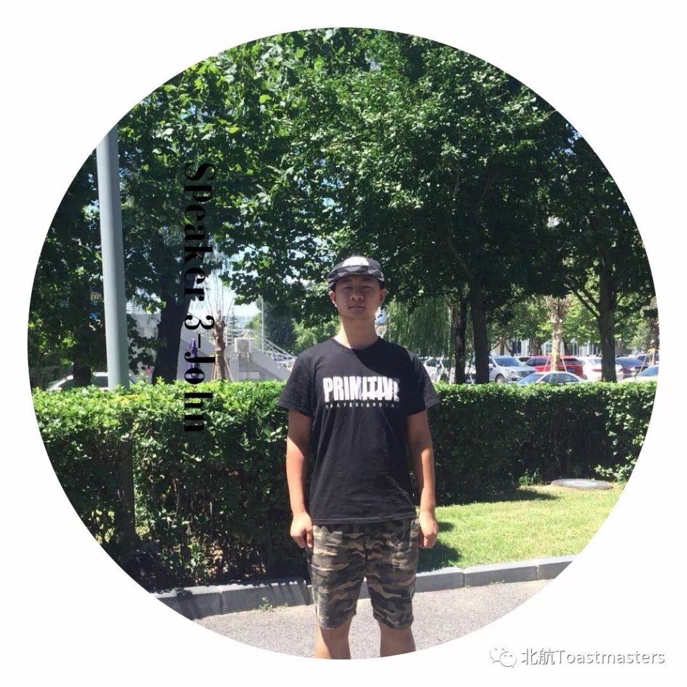
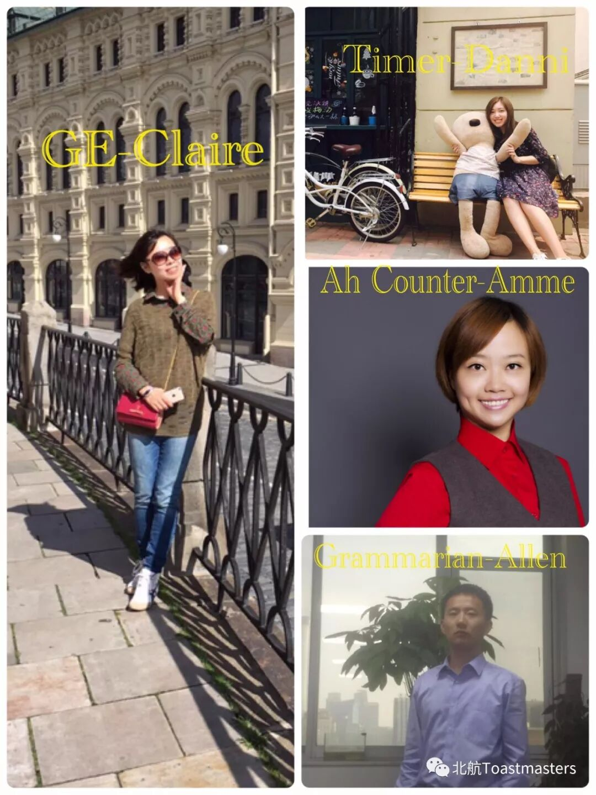

When it comes to theGame, what would you think of?
Ma jiang, Poker,King of Glory, Xiaoxiaole, Truth Or Dare, or Sudoku?
Which game is your favorite?
When will you play a game?
What Game brings or changes your life?
How often will you play a game?
How much time will you spend time on thegame?
A Game？A Competition？Or Confrontation?What do you want to take a look?
Futhermore, our Charming Chad will share with us the topic "How to Make a Prepared Speech".
This week , our toastmaster Annie will lead you to explore 【GAME】
TableTopic

Prepared Speech



Evaluation Team

Training-Chad
How to Evaluate A Prepared Speech（中文）
Quizmaster- Victor

Time: 19:00-21:00, Friday, 20th July
Venue: Room B228, New Main Building, Beihang University
BeihangToastmasters Club is a students' union. At the same time, we belong to a non-profit international organization calledToastmasters International.
Toastmasters International (TI) is a non-profit educational organization that operates clubs worldwide for the purpose of helping members improve their communication, public speaking, and leadership skills.You can find us by the following map of Beihang University.

原文链接（公众号关闭后可能失效）：
https://mp.weixin.qq.com/s/INgLKXwPNSyZBw9sqVaALQ
https://mp.weixin.qq.com/s/INgLKXwPNSyZBw9sqVaALQ
第 482/539 篇 · 北航Toastmasters英文演讲俱乐部公众号存档
本页为抢救式本地归档，图文已永久保存。
本页为抢救式本地归档，图文已永久保存。